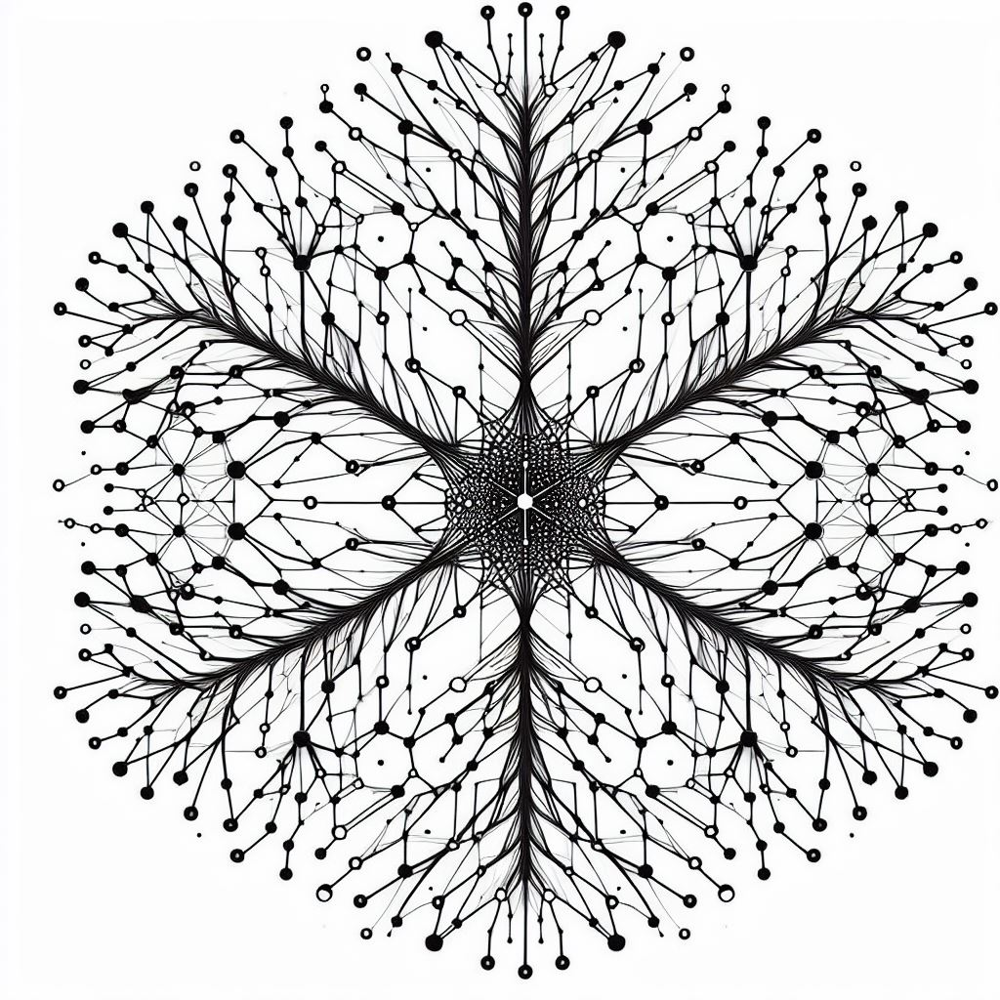
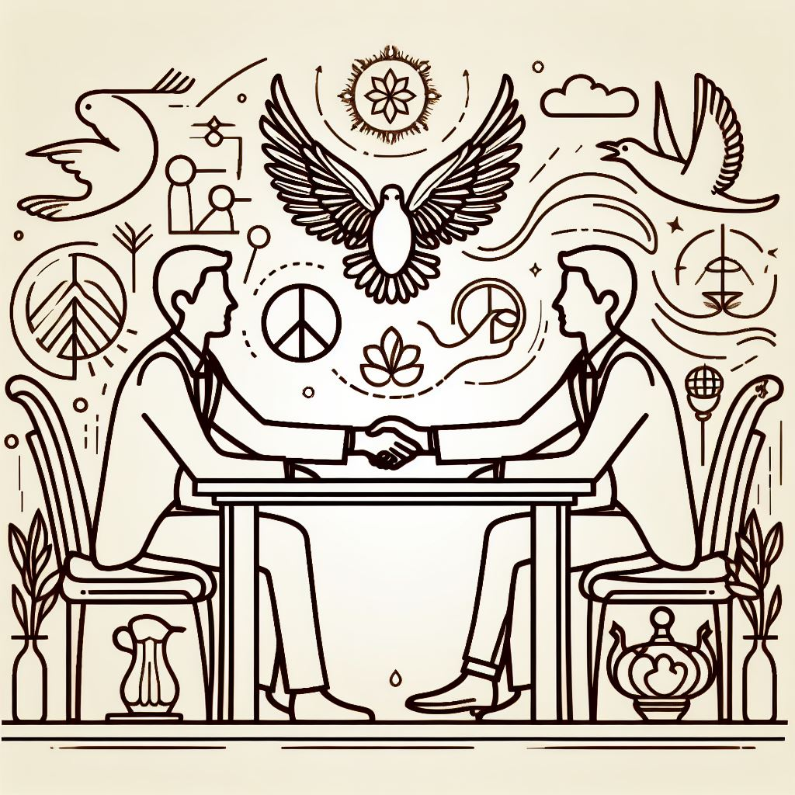

What is Voluntaryism?
“Conceptually, Voluntaryism is a very
simple moral philosophy – it is the
basic proposition that all human interaction
should be directly consensual. Voluntaryism
rejects the initiation of force in all its
various forms including physical violence,
threats of violence, theft, bullying, slavery,
rape, murder, etc. However, unlike Pacifism,
Voluntaryism does not bar the victim of
coercion from responding in a strictly
self-defensive manner.”
- Peter Miller, Introduction to Voluntaryism
Voluntaryism is the moral philosophy that all
forms of interaction should be voluntary, and that
the only just use of force is defensive force. We
abide by the Non-Aggression Principle (NAP) which
dictates that no action be taken that violates
another’s consent if not in
self-defense.
If we are to apply this philosophy consistently,
then we have to hold the people who call
themselves "the government" to the same standards
as anyone else. To paraphrase Mark Corske’s
“Engines of Domination: Political Power and
the Human Emergency”:
Voluntary relations are the opposite of
power relations, and communities are best
organized by voluntary relations.
That is, relations among equals, and not between
rulers and subjects. Voluntaryists are typically
not fans of government in principle, nor do they
think that the institution of coercive government
is necessary. We recognize that there are two ways
that people can relate to one another: voluntarily
or coercively. Voluntaryists embrace the former
and reject the latter.
This also implies that there are no rights that
can be granted to an individual that aren’t
shared by all individuals - such as any rights one
pretends they can grant the
“government” to rule over
others’ lives and livelihoods. Rights are
those actions no individual may prevent others
from engaging in without violating their freedom
to peacefully co-exist in ways that do not violate
the consent of those directly involved. You have
the right to use force against those who seek to
restrict your rights. Rights can neither be
granted nor revoked. They are either respected or
not. It is our responsibility to keep tyranny in
check.
Ultimately, no one thinks that anyone should need
to rule over them - especially someone that they
didn’t choose themselves - which means no
one really supports involuntary rulership over
themselves. And yet due to a lack of options as
well as various methods of social and
psychological conditioning, many people think that
some groups possess the right to intimidate and
initiate force against others and enslave them.
Because some live with intent to enslave, so too
must some live with intent to liberate.
Very few set out with the intent to hurt others
unprovoked. When considering options available in
a provocation with another person, everyone
understands that the cops won’t show up in
time to help and yet many people still don’t
carry self-protection tools or techniques. You
have the right to choose strategies, tools, and
techniques to defend yourself and should be
empowered to do so by not being forced or coerced
into funding things you may not agree with.
Pluralism: a condition or system in which
two or more states, groups, principles,
sources of authority, etc., coexist.
There will be countless methods of organization in
a pluralist society. People are free to create
living situations that suit them. Pluralism would
look like many different organization styles and
provision-strategies coexisting in a decentralized
fashion.
Just as all goods and services presently
provisioned by authoritarian centralized States
should only be considered as
strategies toward
meeting needs, rather than as needs in and of
themselves (e.g. “police are a strategy for
meeting your need for protection, but they are not
a need in and of themselves), so too will the keen
observer recognize that any one strategy cannot
and will not meet the needs and preferences of
most, and all attempts to bend that fabric of
reality have led to the destruction of freedom for
all in various ways.
When someone asks whether there will be a certain
type of community or enclave in a pluralist world,
the answer is yes, as long as the enclave respects
the NAP and employs the SDP (Self-Defense
Principle) and RoR (Right of Restitution). The
question would be: Do they have healthy boundaries
around how other groups choose to organize, trade,
and associate with one-another in their own
spaces? With pluralism, each enclave is able to
exist independently with its own rules, norms, and
customs as long as they do not engage in or permit
to persist or stand unchecked, aggressive force or
coercion. You can’t force others to adopt
your norms in areas where voluntary pluralism is
the respected norm, except with regard to your
person and property.

Pluralism regarding the State would necessitate a
shift toward voluntary participation and funding,
rather than extortion and threats aimed at forcing
centralized goods and services down our throats.
This should not be a concern to the keen observer
because we see voluntary participation and funding
working everywhere in the private sector.
Pluralism puts the public’s economic power
directly into the hands of its constituents while
shielding the masses from any losses sustained by
private-sector-imprudence.
Pluralism lends credence to the “if you
don’t like it, you can leave” phrase
in a voluntary society because you can always
choose the other option(s) available and nobody
has dominion beyond their actual property. This
choosing-power is a very powerful freedom for an
individual to possess, and it is worth securing
and protecting.
Pluralism replacing winner-takes-all
politico-statism would take the perception of
power and influence out of the hands of the
political elite while giving the public’s
constituents (that is, each individual) their
voice and power back. Because the cost of failure
is borne by the private owner(s) of a voluntary
organization rather than “society as a
whole” who has no such investment at stake,
and because customers are free to choose
organizations that best suit their (the
customer’s) individual preferences and
needs, this is a guaranteed better strategy to
meet the needs of humanity in communities of any
size or scale. As long as individuals are free to
associate and disassociate with whom they choose
without punishment or retaliation, pluralism will
enable people to thrive and peacefully coexist
regardless of the difference in their values or
preferences.
You own yourself and therefore possess the
higher claim of authority over yourself and
the product of your time, intellect, and
labor (as an extension of yourself).
Therefore, there is no way anyone else can
have authority over you or what you own.
Self-ownership is one of the basic tenets of the
logic we live by. We have found no evidence to
counteract this tenet and thus we hold it as a
very secure fact. Every individual reading these
words is the sole owner in themselves.
You own your mind through homesteading your body
because your body is your home, and you stead it.
You exclusively home-stead your mind and body and
thus possess the highest claim to exclude others
from the use of yourself. You are responsible for
and act in good service and upkeep toward your
body and mind more than anyone else does or could.
For these reasons, you are the perpetual
homesteader and owner of your mind and body and
exercise the highest claim of authority over
yourself.
The philosophy of self-ownership provides a way to
navigate some contentious topics. It answers some
more obvious questions but does not pretend to
provide answers to all questions. However, the
rest of the questions can and will be answered by
the philosophical application of
Directionality.
Self-ownership extends to property. There are
distinctions within many philosophies that lead to
the concepts such as “abandonment
periods” and “sticky property”,
which are norms that develop among people which
dictate the abandonment conditions or special use
cases for certain types of property such as land.
Property is a strategy aimed at the reduction of
conflict over scarce resources. It is the concept
that an individual or group of individuals can
decide the proper state of a particular thing,
such as but not limited to who may use it, under
what terms, etc.

Most people would answer that they agree with the
tenets of Voluntaryism. The time when this changes
is when it comes to controlling and affecting
other people’s right to self-ownership
through actions of the state. Things like
winner-take-all politics, majority-rule voting,
and (others) are direct violations of the NAP.
There are alternate strategies and solutions to
the problems these things aim to solve which do
not require force or coercion.
-
What gives someone a right?
-
Do you have the right to delegate a
right to someone that you don’t
have yourself?
-
If you do not have the right to
perform an action yourself, what gives
you the right to elect someone to do
it on your behalf? (hint: nothing)

The word “statist” may refer to
someone who believes the state must exist. They
may belive that it is the best option, or the only
option. In reality, the state has no legitimacy -
and we have the opportunity to foster a
voluntaryist world in its place. There is no such
thing as someone granting a right they do not have
themselves. And nobody has a right to make a
decision for someone else. All of us who care must
outweigh the few who actually want to make others
suffer. If there’s an issue with a violation
of the NAP, that is a perfect time to discuss and
practice some voluntary conflict resolution.
We want people to be able to pursue any avenue
they want, as long as it does not harm another
individual or group. We recognize people have the
ability to govern themselves because they own
themselves. We also then necessarily recognize
that no individual nor group of individuals has
authority over other individuals or groups.
I vote?
It depends. Within the current system, you
must be very choosy to be voluntaryist with
your voting. In most cases, as with
“electing officials”, you are
forcing your opinion on another person. If you
were able to vote on an issue that only
increased freedom, like removing a tax, that
would be voluntaryist.
I want to live by a set of rules?
Most likely, yes. All rules can coexist as
long as they don’t initiate violence or
coercion aka take away the consent of others.
All forms of rules are ‘allowed’
as long as they don’t initiate violence
or coercion.
If I believe we need the state to enforce
rules?
Yes. Look into other means of rule
enforcement. There is much literature on this.
If I think that humans cannot govern
themselves?
Not necessarily. For example, religious
anarchists like Leo Tolstoy believe that God
governs humans. In a pluralistic voluntary
society people have all sorts of voluntary
enclaves with their own versions of governance
to choose from.
If I believe in private property?
Not necessarily. There are many different
views on property, but most Voluntaryists
believe in private property while rejecting
compulsory enforcement thereover by a third
party. Enforcement of private property is the
sole responsibility of the property owner.